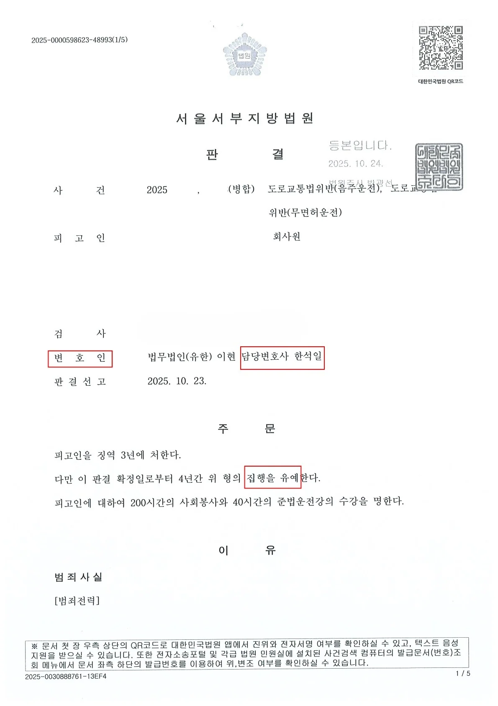
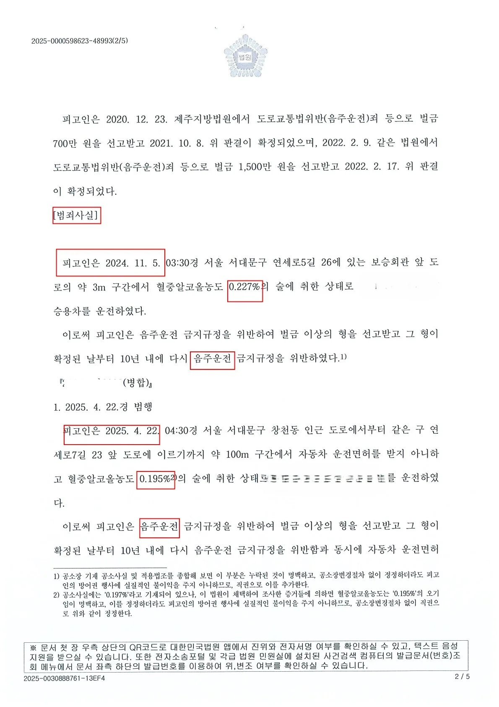
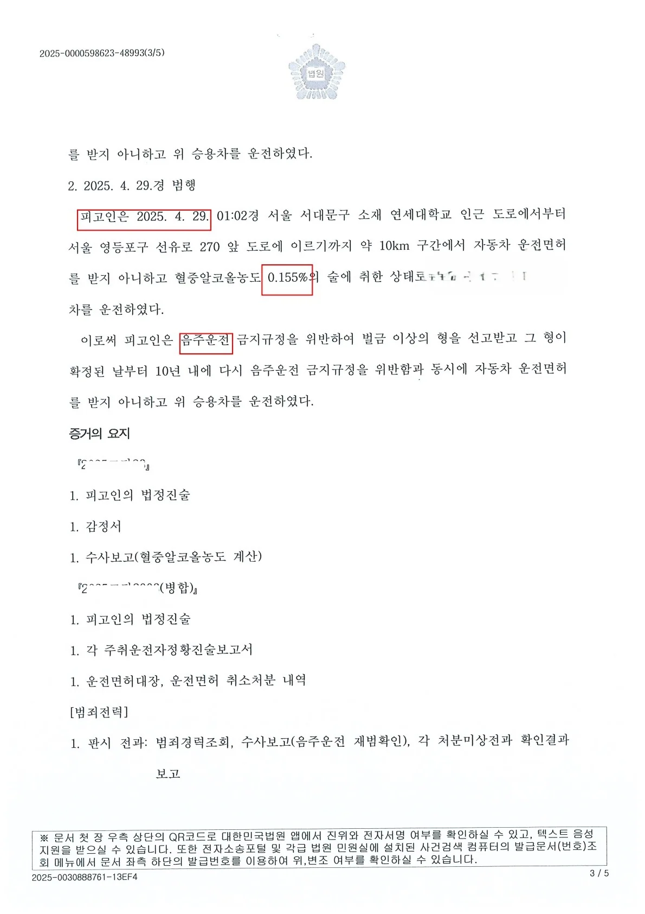

[5회 음주운전 집행유예] 재판 중 무면허 음주운전 2회 추가 및 사고 발생! 구속 위기, '맞춤형 양형 전략'으로 집행유예 방어
구속영장까지 청구되었던 '음주운전 3진 아웃 및 재판 중 무면허 음주·사고 추가 발생'이라는 최악의 실형 위기 사건이었습니다. 그러나 한석일 변호사만의 심층적인 맞춤형 양형 전략을 통해 기적적으로 '징역 3년, 집행유예 4년'을 이끌어냈습니다
1. 사건의 심각성
의뢰인은 이미 과거 2차례의 음주운전 전과가 있는 상태였습니다
또다시 혈중알코올농도 0.227%의 만취 상태로 적발되었고, 심지어 면허 취소 후 재판을 받는 도중 불과 일주일 간격으로 2차례나 더 '무면허 음주운전'을 저질렀습니다.
그 과정에서 교통사고까지 발생시켜, 재판부의 선처를 기대하기는 불가능에 가까운 절망적인 상황이었습니다. 수사기관에서 곧바로 구속영장을 청구했을 정도로 죄질이 매우 무겁게 평가되었으며, 본 재판에서 법정구속(실형)이 예상되는 절망적인 상황이었습니다.
2. 한석일 변호사의 입체적 방어 전략
단순한 반성문 제출이나 누구나 조언하는 뻔한 방법만으로는 절대 실형을 피할 수 없는 중대 사안이었습니다.
한석일 변호사는 의뢰인의 삶 전체를 심층 분석하여, 법원이 납득할 수밖에 없는 특별한 양형 사유(중대한 인생의 전환점 등)를 발굴하고 세팅하는 고도의 맞춤형 방어 전략을 수립하여 재판부를 설득했습니다.
3. 극적인 결과: 징역 3년, 집행유예 4년
재판부는 피고인의 죄질이 매우 무겁다고 지적했으나, 한석일 변호사가 철저하게 기획하고 증명해 낸 '재범 방지를 위한 확고하고 특별한 노력들'을 깊이 참작하였습니다.
결과적으로 의뢰인은 법정구속의 위기를 극적으로 넘기고 '징역 3년, 집행유예 4년'이라는 기적적인 판결을 받았습니다
💡 단순한 반성으로는 구속을 피할 수 없습니다. 구속영장 청구, 음주운전 3진 아웃, 무면허 적발 등 실형 위기라면 당신의 인생에 맞춘 특별한 전략이 필요합니다. 한석일 변호사가 당신만을 위한 최적의 돌파구를 찾아드립니다.



※ 구체적인 사건은 사실관계에 따라 달라질 수 있습니다.

 한석일 대표변호사
한석일 대표변호사